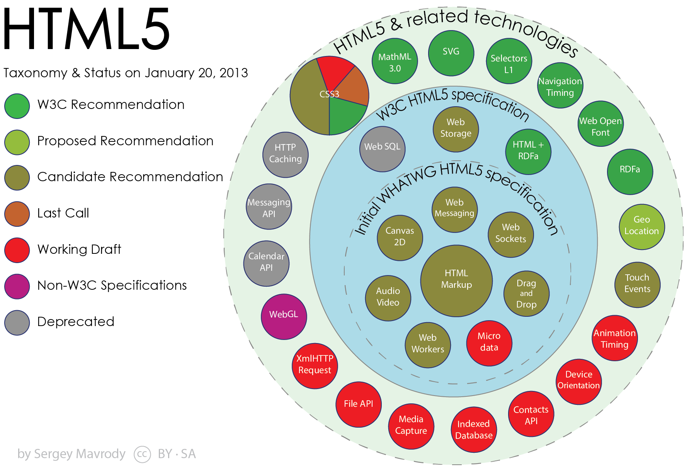

Интернет - всемирная система объединённых компьютерных сетей для хранения и передачи информации(сеть сетей).
Если не вдаваться в сложные технические подробности, можно сказать, что Интернет – это система, которая объединяет компьютерные сети по всему миру.
Ресурсы Интернета разбросаны по оборудованию на всем земном шаре. Для связи этого оборудования между собой на огромных расстояниях придумали специальные алгоритмы и стандарты, в частности, стек протоколов TCP/IP, на котором в настоящее время функционирует наш Интернет.
Кусочек Интернета
Компьютеры подразделяются на две группы – клиенты и серверы. Клиентами называют обычные пользовательские устройства, куда входят и персональные компьютеры, и ноутбуки, и планшеты, и, конечно же, смартфоны. Они отправляют запрос, получают и отображают информацию.
Пример запроса клиента
Всю информацию хранят сервера, которые могут классифицироваться по разным назначениям:
веб-сервера
почтовые
чаты
системы трансляции радио и телевидения
обмен файлами
Серверами являются мощные компьютеры, работающие непрерывно.Кроме хранения информации они получают запросы от клиентов и отправляют необходимый ответ. При этом обрабатывают они сотни таких запросов.
Необходимо так же упомянуть упомянуть интернет-провайдеров, которые обеспечивают связь клиента и сервера. Провайдер – это такая организация со своим интернет-сервером, к которому подключены все её клиенты. Провайдеры обеспечивают связь по телефонному кабелю, выделенному каналу или беспроводной сети.
Схема подключения
Можно ли обойтись без провайдера и напрямую подключиться к сети Интернет? Теоретически можно! Вам придётся стать самому себе провайдером и потратить за огромную сумму денег, чтобы добраться к центральным серверам. Так что не ругайте сильно своего поставщика интернета за высокие тарифы – этим ребятам тоже нужно оплачивать многие вещи и тратиться на обслуживание оборудования.
World Wide Web
World Wide Web или просто web – «паутина». Фактически она представлена огромным количеством страниц, которые связанны между собой. Эта связь обеспечивается ссылками, посредством которых можно переходить из одной страницы на другую, даже если она расположе на другом компьютере, подключённом к сети Интернет.
Всемирная паутина – самая популярная и большая служба Интернета
Всемирная паутина для своей работы использует специальные веб-серверы. На них хранятся веб-страницы. Страницы, связанные ссылками, имеющие общую тематику, внешний вид, и обычно расположенные на одном сервере называются веб-сайтом. Для просмотра страниц и документов паутины используются специальные программы – браузеры. Именно Всемирная паутина включает в себя форумы, блоги и социальные сети. А вот непосредственно её работу и существование обеспечивает сеть Интернет.
Разница?!
На самом деле разница между Интернетом и Всемирной паутиной достаточно большая. Если Интернет – это огромная сеть, связующая миллионы компьютеров по всей планете для совместного использовании информации, то Всемирная паутина лишь один из способов обмена этой информацией.
Кроме обеспечения работы World Wide Web, Интернет позволяет использовать электронную почту и различные мессенджеры, а также передавать файлы по по FTP-протоколу, Интернет – это то, что связывает многочисленные компьютерные сети. Всемирная паутина – это все страницы, которые хранятся на специальных серверах Интернета.
История HTML
Сэр Тимоти Джон Бернерс-Ли
Сэр Тимоти Джон Бернерс-Ли — британский учёный, изобретатель HTTP, HTML, создатель Всемирной паутины (совместно с Робертом Кайо) и действующий глава Консорциума Всемирной паутины. Автор концепции семантической паутины. Автор множества других разработок в области информационных технологий.
Сэр Тимоти Джон Бернерс-Ли
В 1989 году, работая в CERN, Бернерс-Ли предложил проект, известный как Всемирная паутина (World Wide Web). Проект подразумевал публикацию гипертекстовых документов, связанных между собой гиперссылками, что облегчило бы поиск и консолидацию информации. Проект Паутины был предназначен для учёных CERN и первоначально использовался во внутренней сети CERN. Для осуществления проекта Тимом Бернерсом-Ли, совместно с его помощниками, были изобретены протокол HTTP и язык HTML. Эти технологии легли в основу современной Всемирной паутины. В период с 1991 по 1993 год Бернерс-Ли усовершенствовал технические спецификации стандартов и опубликовал их.
HTTP ( HyperText Transfer Protocol - «протокол передачи гипертекста») - протокол прикладного уровня передачи данных (изначально - в виде гипертекстовых документов в формате HTML, в настоящий момент используется для передачи произвольных данных). Основой HTTP является технология клиент-сервер.
Этот протокол соответствует схеме "запрос-ответ".На каждый HTTP-запрос браузера веб-сервер отвечает HTTP-ответом. По своей инициативе веб-сервер HTTP-пакеты не шлет, к тому же, зачастую, после завершения операции "запрос-ответ" сервер разрывает соединение с клиентом.
Схема запрос-ответ
Общение между хостом и клиентом происходит в два этапа: запрос и ответ. Клиент формирует HTTP запрос, в ответ на который сервер даёт ответ (сообщение).
Веб-сервер — это компьютерная программа, запускаемая на подключённом к сети компьютере и использующая протокол HTTP для передачи данных. В простейшем виде такая программа получает по сети HTTP-запрос на определённый ресурс, находит соответствующий файл на локальном жёстком диске и отправляет его по сети запросившему компьютеру.
По сути, протокол HTTP - это инструмент, с помощью которого можно передавать веб-страницы в сети Интернет. Веб-страница, которую мы получаем в ответе от сервера, на самом деле это HTML-код, который получает браузер и соответствующим образом его интерпретирует.
В 1994 году Тим Бернерс-Ли основал World Wide Web Consortium (W3C) в Массачусетском технологическом институте (Massachusetts Institute of Technology) при поддержке CERN, DARPA (в которую была переименована ARPA) и Европейской Комиссии. Консорциум W3C видел свою задачу в стандартизации протоколов и технологий, которые используются для создания Web, чтобы информационное содержание было доступно как можно большему числу жителей всего мира.
Однако, W3C не принуждает использовать свои рекомендации, а занимается внедрением и разработкой технологических стандартов для Всемирной паутины.
Любой стандарт W3C проходит 5 стадий согласования:
и только после этого официально становится рекомендацией W3C.
HTML 2.0
История создания HTML, говорит нам о том, что в 1991 году Тим предложил 20 элементов (тэгов), которые можно было использовать для разметки веб документа. Многие подумают, что это якобы HTML версии 1, это не так.
Официально существование спецификации HTML началось с HTML 2.0 и было опубликовано сообществом IETF (Инженерный совет интернета).
В 1994 году был создан W3C(Консорциум Всемирной паутины), который в 1996 году создаёт HTML 2.0, а также спецификацию для него.
От HTML до XHTML
В январе 1997 года, W3C создает HTML 3.2, затем в декабре того же года HTML 4.0, а в декабре 1999 года у HTML 4.01.
В версии HTML 4.0 произошла некоторая «очистка» стандарта. Многие элементы были отмечены как устаревшие и не рекомендованные. В частности, тег <font>, используемый для изменения свойств шрифта, был помечен как устаревший (вместо него рекомендуется использовать таблицы стилей CSS).
В 1998 году Консорциум Всемирной паутины начал работу над новым языком разметки, основанным на HTML 4, но соответствующим синтаксису XML. Впоследствии новый язык получил название XHTML.
К концу 1999 г. консорциум W3C прекратил поддержку HTML и попытался заменить его языком на основе языка XML — XHTML 1.0.
XHTML 1.0
В стандарте XHTML используются те же синтаксические соглашения, что и в HTML, но в нем ужесточены требования к следованию установленным правилам.
При этом разница между HTML и XHTML состоит в наборе некоторых обязательных правил.
Большая часть отступлений от правил разметки, которые сходят с рук в традиционном HTML, попросту неприемлемы в XHTML.
Правила XHTML следующие
Все теги и их атрибуты должны быть набраны в нижнем регистре (строчными символами)
Значения любых атрибутов необходимо заключать в кавычки
Требуется закрывать все теги, даже такие, которым не сопоставлен закрывающий тег
Должна соблюдаться правильная вложенность тегов
Нельзя использовать сокращенные атрибуты тегов
Вместо атрибута name следует указывать id
Следует определять DTD (document type definition, описание типа документа) с помощью элемента <!DOCTYPE>
<!DOCTYPE html
PUBLIC "-//W3C//DTD XHTML 1.0 Strict//EN"
"http://www.w3.org/TR/xhtml1/DTD/xhtml1-strict.dtd">
<!DOCTYPE html>
Но в то время, как все казались достаточно довольными этим языком разметки, у него был один скелет в шкафу: хотя браузеры понимали разметку XHTML, они не обеспечивали строгую проверку отступлений от правил, требуемую этим стандартом. Это означает, что страница может быть создана с нарушением правил XHTML, но браузеры и глазом не моргнут при ее обработке. Более того, ничто не могло помешать веб-разработчику бросить в одну кучу небрежно написанную разметку и устаревшее HTML-содержимое и назвать все это страницей XHTML. Ни один браузер на планете не имел бы никаких претензий при обработке такой страницы. И это обстоятельство вызывало у людей, ответственных за стандарт XHTML, глубокое чувство тревоги.
XHTML 2: неожиданный провал
Эта проблема должна была, по идее, быть решенной в следующей версии — XHTML 2. В ней нужно было ужесточить правила обработки ошибок, которые бы заставляли браузеры не обрабатывать страницы, не отвечающие стандарту XHTML.
В 2002 году, W3C начал разрабатывать XHTML 2.0, язык решили делать с нуля, что привело к проблемам совместимости с предыдущими версиями языков HTML и XHTML.
По некоторым оценкам, более 99% HTML-страниц в вебе сегодня, содержат, по меньшей мере, одну ошибку. Но так как эти ошибки не заставляют браузеры отображать видимые сообщения об ошибках, никто никогда их не исправляет.
W3C увидев в этом фундаментальную проблему веба и стал исправлять ее. Консорциум постановил, что все программы, которые потребляют XML(XHTML был на его основе) должны рассматривать так называемые «синтаксические» ошибки как фатальные. Эта концепция провала на первой же ошибке стала известна как «драконовская обработка ошибок», подобно греческому лидеру Драконту, кто учредил смертную казнь за малейшее нарушение его законов.
Изменения такого рода были типичными для XHTML 2. С теоретической точки зрения, они делали язык более аккуратным и были более понятными. Но с практической стороны, они вынуждали всех изменить свой подход к созданию веб-страниц (не говоря об обновлении уже созданных веб-страниц), не добавляя при этом никакой новой функциональности, чтобы оправдать всю эту работу.
Попутно из XHTML 2 было удалено несколько удобных элементов, которые все еще пользовались популярностью среди веб-разработчиков, таких как <b> (полужирный текст), <i> (текст курсивом) и <iframe> (для вложения одной веб-страницы в другую).
Но, возможно, худшей проблемой оказалась чрезвычайно медленная скорость внесения изменений. Разработка XHTML 2 тащилась в течение пяти лет, и интерес разработчиков к этому стандарту медленно угасал.
Многие разработчики и крупные игроки веб-индустрии начали проявлять недовольство политикой и работой W3C, они хотели чтобы язык обладал обратной совместимостью, а также чтобы в новом языке появились стандарты для создания веб-приложений.
HTML5
Логотип HTML5WHATWG (Web Hypertext Application Technology Working Group)
История HTML5 начинается в 2004 году, когда большая часть видных деятелей веб-индустрии, а также крупных компаний таких как Google, Mozilla, Opera, Apple и Microsoft, создают свою собственную рабочую группу под названием WHATWG (Web Hypertext Application Technology Working Group). Возглавил её Ян Хиксон.
Ян Хиксон
Вместо того чтобы попытаться разобраться, что было неправильным в HTML, они сфокусировались на том, чего в нем не хватало, что хотели бы иметь веб-разработчики для воплощения своих идей.
Группа не ставила перед собой задачу заменить HTML, ее целью было плавное расширение языка, и причем такое, чтобы расширения были обратно совместимыми. Надо сказать, что самая ранняя версия работы этой группы включала две спецификации расширений — Web Applications 1.0 и Web Forms 2.0. В конечном итоге эти стандарты эволюционировали в HTML5.
Предполагается, что число 5 в названии HTML5 означает: данный стандарт является продолжением стандарта HTML (последней версией стандарта HTML перед XHTML была версия 4.01). Это, конечно же, не совсем верно, т. к. HTML5 поддерживает все разработки, существовавшие в области создания веб-страниц в течение десяти лет после выпуска HTML 4.01, включая строгий синтаксис в стиле XHTML (если разработчики желают использовать его), а также множество инноваций для JavaScript. Тем не менее это название делает ясным следующее: язык HTML5 может поддерживать соглашения XHTML, но требует следования правилам HTML.
Ребята из WHATWG в полной мере приступили к разработке HTML5 отделившись от консорциума, который в полной мере продолжил разработку спецификации XHTML 2.
В 2006 году W3C всё еще продолжает работать над XHTML 2.0. В том же году руководитель консорциума сэр Тим Бёрнерс Ли написал в своём блоге, что работа над XHTML 2.0 видимо не будет иметь смысла, поскольку разработчики сайтов не желают создавать свои проекты по XML типу, а желают новых версий HTML.
Так же Тим Бернерс-Ли написал, что ребята из WHATWG пошли прогрессивным путём и делают огромный прорыв в развитии web отрасли, а текущее положение дел в консорциуме подтверждает что развитие XHTML это путь в никуда.
После долгих переговоров(2009год) между разработчиками они пришли к выводу, что наработки WHATWG прекрасно подойдут для создания нового HTML, теперь уже официально версии 5. Между WHATWG и W3C был заключён договор, который гласит о следующем: WHATWG разрабатывает спецификацию по своим рамкам требований, а W3C утверждает изменения и вводит новый стандарт. Между двумя группами были заключены многие соглашения, например, название должно писаться без пробела — HTML5, разметка регистр-независимая, но с рекомендациями, как писать не положено и многие другие.
К 2009 г. этапе первоначальный стандарт HTML5 был разделен на более управляемые части, и многие из его функциональных возможностей стали отдельными стандартами.
Браузеров, "поддерживающих" HTML5, не существует. Вместо этого, каждый браузер поддерживает постепенно расширяющееся подмножество возможностей HTML5. Этот подход является как хорошим, так и плохим. Хорош он потому, что браузеры могут быстро реализовать готовые части стандарта HTML5, пока другие возможности продолжают развиваться. А плох он тем, что заставляет веб-разработчиков беспокоиться о проверке, поддерживает ли конкретный браузер каждую функциональную возможность, которую они хотят использовать.

HTML5 APIs ("устаревшая")
Далее приводится список и короткое описание основных категорий функциональных возможностей, охватываемых HTML5
Ядро HTML5. Эта часть HTML5 составляет официальную версию спецификации организации W3C. Она содержит новые семантические элементы, новые и усовершенствованные элементы управления для веб-форм, поддержку аудио и видео, а также холст для рисования с помощью JavaScript. В эту категорию входит большинство функциональных возможностей, которые наилучшим образом поддерживаются браузерами.
Ранние возможности HTML5. Это возможности, которые были реализованы в первоначальной спецификации HTML5, подготовленной группой WHATWG. Большинство из них — это спецификации для возможностей, требующих JavaScript и поддерживающих развитые веб-приложения. Наиболее важными являются локальное хранение данных, приложения, работающие в автономном режиме, и обмен сообщениями.
Возможности, иногда называемые HTML5. Это возможности следующего поколения, которые часто считаются частью HTML5, хотя они никогда не входили в стандарт HTML5. Эта категория включает спецификацию CSS3 и геолокацию.